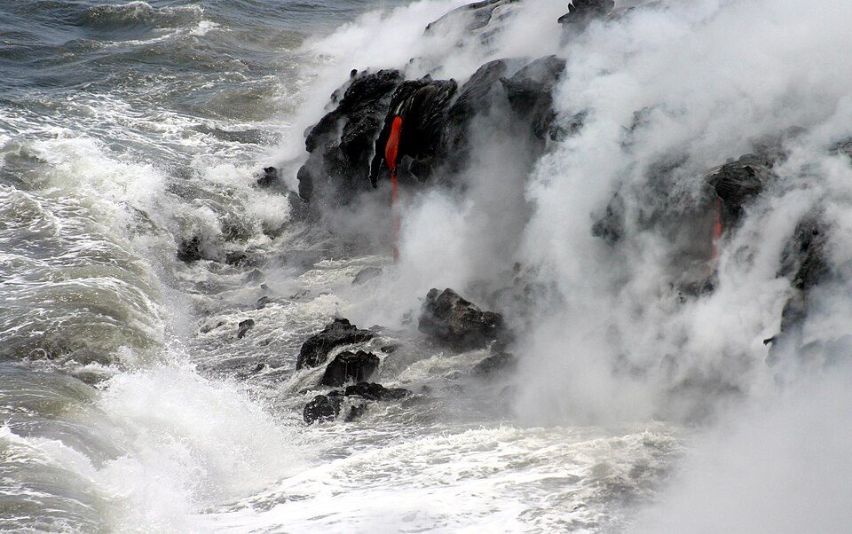
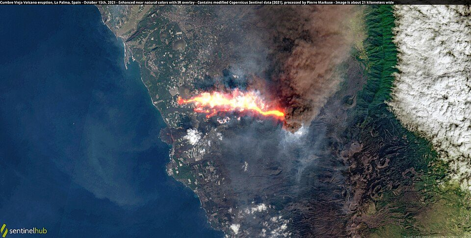

Volcanoes
Windows into the Earth's interior: how they work, history's great eruptions and Spain's volcanoes, from Teide to La Palma and Olot.

.jpg){kind=link}
A volcano is an opening in the crust through which magma, molten rock from inside the Earth, escapes. Once it reaches the surface it is called lava. There are about 1,350 potentially active volcanoes on land, and 50 to 70 of them erupt each year. Many more are hidden under the sea.
Why there are volcanoes
Almost all form along the edges of tectonic plates: where they pull apart, as in Iceland, or where one sinks beneath another, as in the Andes, Japan or Indonesia. Others arise above hotspots, columns of hot material rising from the deep mantle that burn through the plate like a blowtorch. That is how Hawaii and, probably, the Canary Islands formed.
Explosive or gentle
A volcano's temperament depends on its magma. If it is runny and low in gas, as in Hawaii, lava pours out in rivers and fountains and builds broad, gentle shield volcanoes. If it is thick and gas-rich, pressure builds like in a shaken bottle of fizz and the volcano explodes, hurling ash tens of kilometres high. The deadliest danger is pyroclastic flows: avalanches of gas and ash at hundreds of degrees racing downhill at over 100 km/h.


Eruptions that changed history
| Volcano | Year | What happened |
|---|---|---|
| Vesuvius (Italy) | 79 | Buried Pompeii and Herculaneum under ash |
| Tambora (Indonesia) | 1815 | The largest eruption in written history; 1816 was "the year without a summer" in Europe |
| Krakatoa (Indonesia) | 1883 | The blast was heard 4,800 km away; tsunamis killed over 36,000 people |
| Mount St Helens (US) | 1980 | The volcano lost 400 metres of height in a sideways blast |
| Pinatubo (Philippines) | 1991 | Cooled the whole planet's climate by half a degree for a year |
| Hunga Tonga (Tonga) | 2022 | The underwater explosion blasted water vapour into the mesosphere |
Spain's volcanoes
- Teide (Tenerife), at 3,715 metres, is Spain's highest mountain. Measured from the ocean floor it exceeds 7,000 metres, making it one of the largest volcanoes in the world. Its national park is a World Heritage Site.
- La Palma: on 19 September 2021 the Cumbre Vieja volcano began erupting, at a vent later named Tajogaite. The eruption lasted 85 days; lava covered more than 1,200 hectares, buried whole neighbourhoods and thousands of buildings, and added new land to the island. It was the most studied eruption in Spain's history.
- Lanzarote: between 1730 and 1736 the eruptions of Timanfaya covered a quarter of the island.
- La Garrotxa (Girona): around Olot there are some 40 volcanic cones, such as Croscat and Santa Margarida, whose crater holds a chapel. The last eruption was about 13,000 years ago.
- Campo de Calatrava (Ciudad Real) and Cabo de Gata (Almería) are other volcanic areas, now dormant.

.jpg){kind=link}
Supervolcanoes
Some volcanoes can eject more than 1,000 km³ of material in a single eruption. Yellowstone in the United States has done so three times in the last 2.1 million years. Beneath its park, famous for its geysers, lies a large magma chamber, although scientists see no sign of an imminent eruption.
Videos to understand it better
- Volcanoes 101 | National GeographicNational Geographic · 31.9M views
- Volcanic eruption explained - Steven AndersonTED-Ed · 2.6M views
Videos are from YouTube and belong to their creators. They only load when you click them. See all videos →